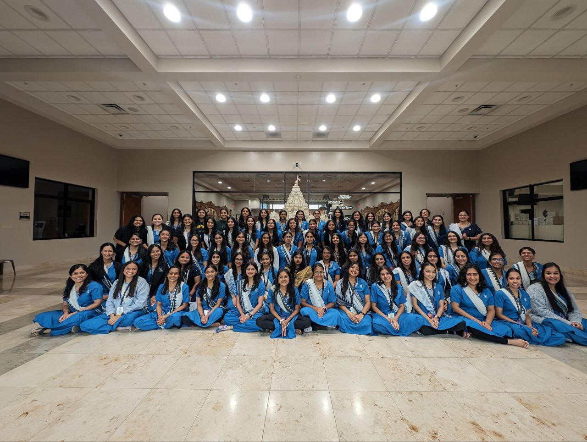
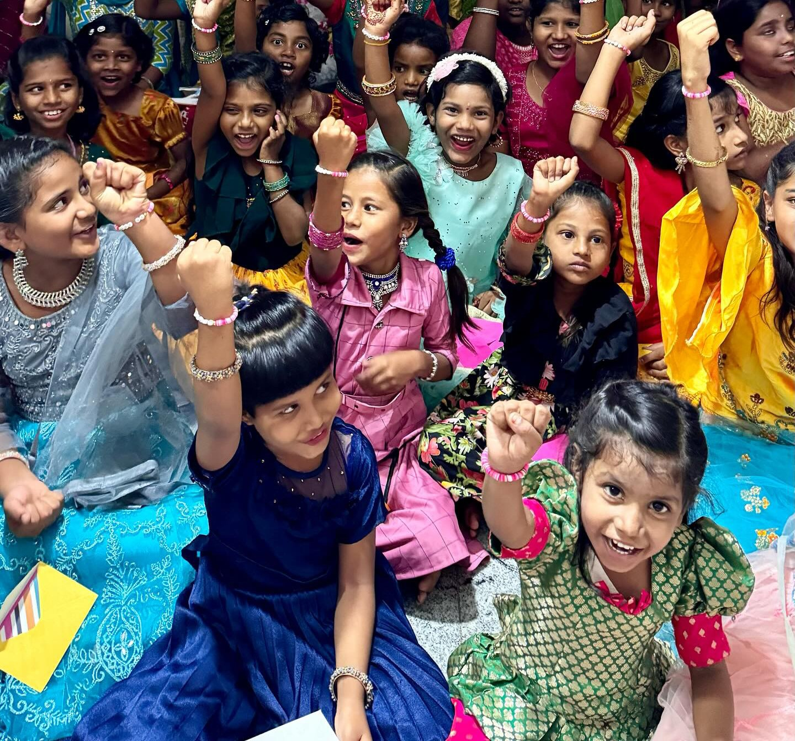

Service
Giving back to the community is an integral part of who I am, and I engage in many
volunteer and mentoring roles to make a positive impact. As a Volunteer Coordinator for
BAPS Charities since January 2016, I have led teams in organizing and executing
community-focused projects, particularly in health and wellness. My role involves
mentoring volunteers, managing resources, and orchestrating events like the Annual
Health Fair, where we prescreen patients and conduct BMI-related measurements to
enhance community health awareness. To learn more about BAPS
and BAPS Charities please click the respective links.
At Texas A&M University, I am also an active member of the Philanthropy Committee for
Aggie Classics, where I help coordinate fundraising events to support Rescue Pink, an
organization dedicated to empowering women and children in need. From organizing
bracelet-making events to leading our annual Walkathon, I am committed to raising funds
and awareness for this important cause, with the goal of contributing over $10,000
annually. To learn more about Aggie Classics please click here.
I also participate in the annual Big Event in College Station, where thousands of
Texas A&M students come together to say “Thank You” to the residents of Bryan and
College Station by completing service projects such as yard work, window washing, and
painting for residents of the community. To learn more about Big Event please click here.

This picture is from volunteering at a BAPS Charities Event.

This picture is from when I, along with Aggie Classics, made bracelets to send to the Rescue Pink organization. This is a picture of the girls wearing the bracelets.

This picture is from when I raised money and attended a Walkathon to help find a cure for Alzheimer's.